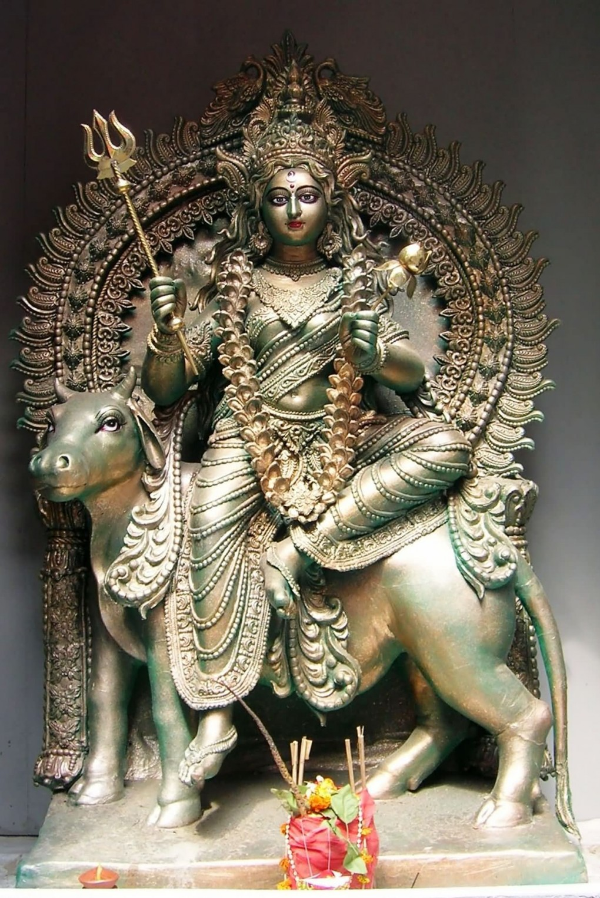

|
|||||
lordess sakthi
NAVA DURGA
SHAILPUTRI
|
 |
|
Goddess Durga is famous in her first form, Shell purutri ,to receive birth as a daughter of the daughter of the Himalayas in themountain-state Himalaya , she received the name Shailputri . The Shailpuri word is composed of two words: First Shell and second daughter, Shailputri , daughter of Himalaya Raj Shell . On the Goddess Shailputri Mast, Ardha Chandra, Nana Jewelry, Mudra etc. are held and appear to be very pleasant. On the Taurus, the Goddess's vehicle is Taurus and the trident in his right hand and holds the Padma in the right hand. Goddess appears beautiful by wearing different types of ornaments and exquisite garments. Brahma ji Accept the prayers, the Goddess who in a previous life divine Son accomplished here Sati was holding born as. He was married to Lord Shankar and after hearing his husband's condemnation at his father Daksha , he sacrificed his body with Yog-fire, and sacrificed his body. Lord Shiva knows that! His beloved Shiva has sacrificed his body in the yagya ritual; He became very angry and with his grace he destroyed the vicious yagya. The monster named Tarakasura delights in Brahma 's devotion to him, in order to achieve the right and immortality in all the three worlds! ' Lord Shiva By getting the groom's death 'only by his son , he had become immortal. Because, after the death of Sati, Lord Shiva , Kailash always used to meditate or meditate on Yoga and was rectified, there was no question that his son was born. Tarakasur left all the Gods out of heaven, seated himself in the throne of the Goddess and started ruling in all the three seas. To redress this grave problem, all the gods and Brahma gathered the strength etc. are worshiped and holding them back body, Shiva prayed to be Ardhagdaini of. Jagat-Janani Mata, according to the prayers of gods and Brahma ji , Himalaya RajBorn as the daughter of Being the daughter of Sheel or Himalayas , Shellpurutri name has been received and went public and became famous by name Parvati . They are devoted to the first date of the new night, on this day they are worshiped; In their other names, Hmawati is also one.
|